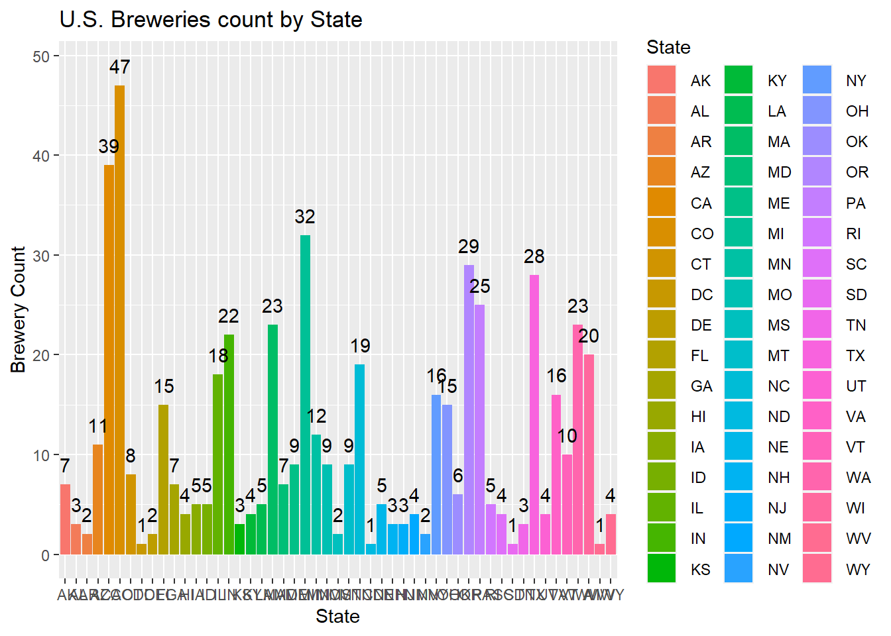
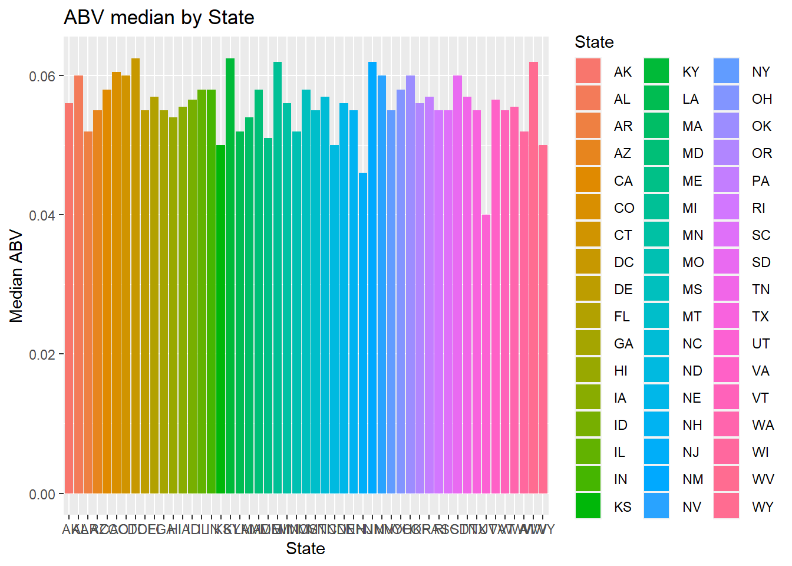
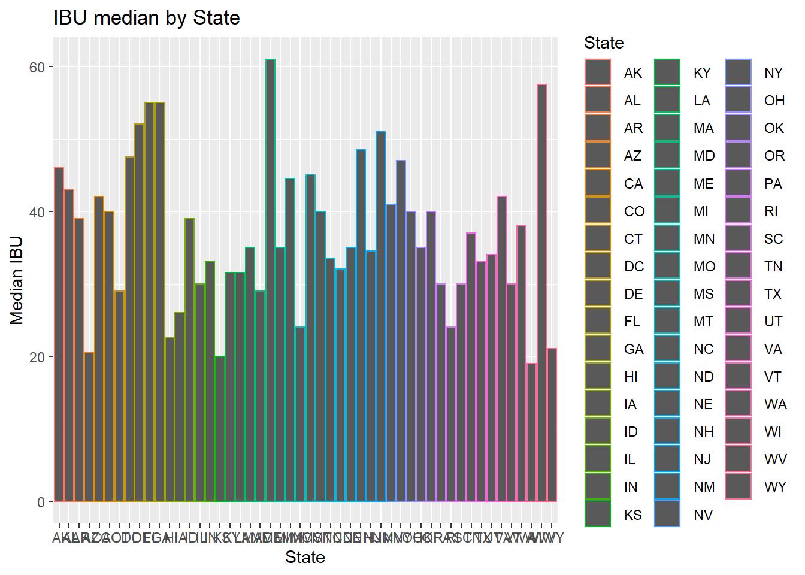
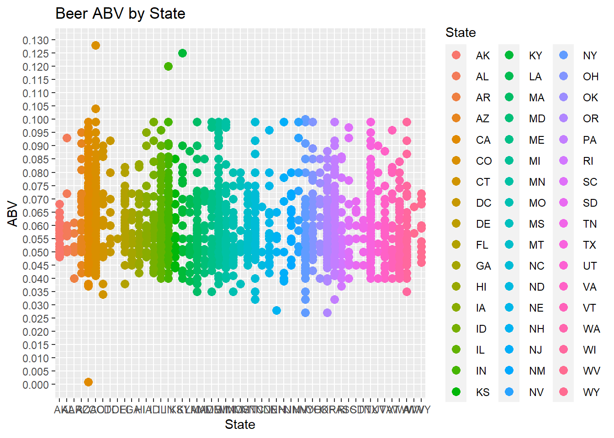
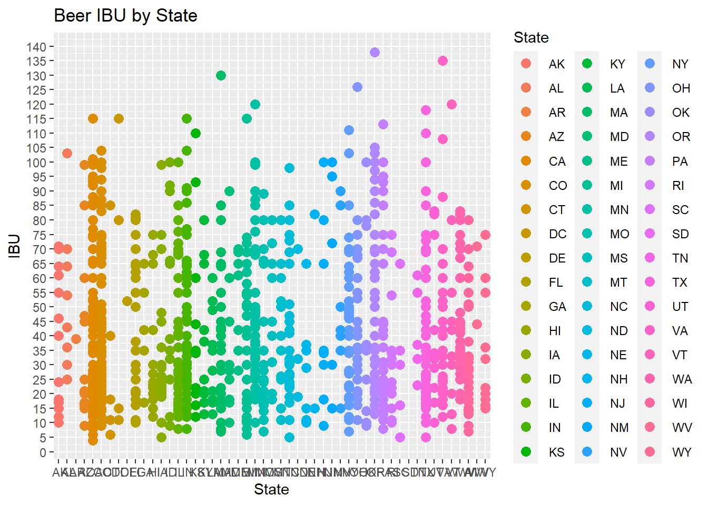
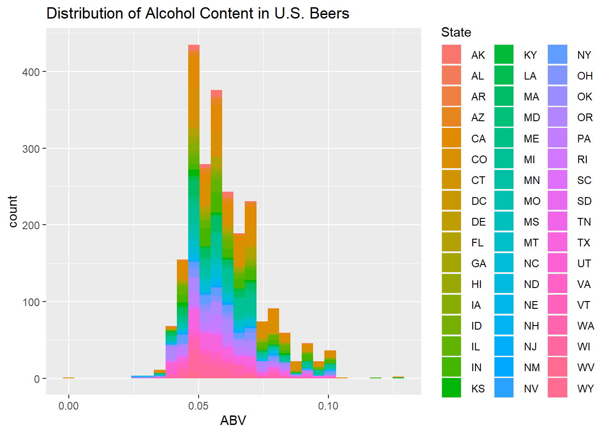
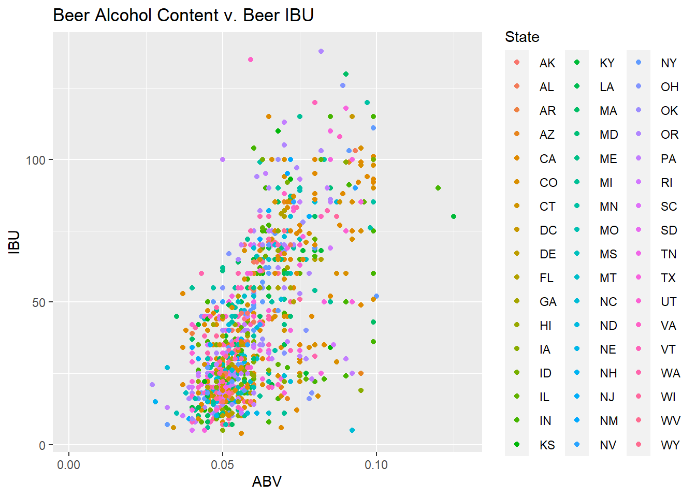
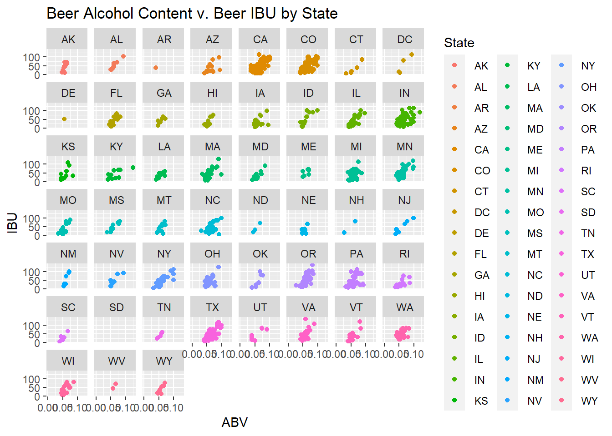
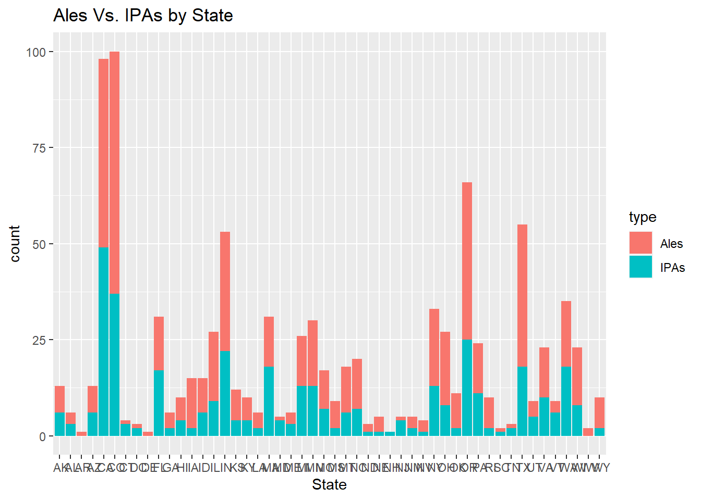

#Beers and Breweries RMD:Exploratory Data Analysis of U.S. Beers and Breweries for Budweiser
## This code gets count by state and gives the summary statistics.
###The Median breweries per state is 7.00, the Mean is 10.94. The least amount per state is 1 and the most is 47 (Colorado)
library(GGally)## Loading required package: ggplot2## Registered S3 method overwritten by 'GGally':
## method from
## +.gg ggplot2library(tidyverse)## -- Attaching packages --------------------------------------- tidyverse 1.3.0 --## v tibble 3.0.4 v dplyr 1.0.2
## v tidyr 1.1.2 v stringr 1.4.0
## v readr 1.4.0 v forcats 0.5.0
## v purrr 0.3.4## Warning: package 'tibble' was built under R version 4.0.3## Warning: package 'readr' was built under R version 4.0.3## -- Conflicts ------------------------------------------ tidyverse_conflicts() --
## x dplyr::filter() masks stats::filter()
## x dplyr::lag() masks stats::lag()Breweries <- read.csv("H:/Schools/SMU/DoingDataScienceHomework/UnitOne/Unit One/Unit 8 and 9 Case Study 1/Breweries.csv")
Beers <- read.csv("H:/Schools/SMU/DoingDataScienceHomework/UnitOne/Unit One/Unit 8 and 9 Case Study 1/Beers.csv")
BrewCount <- Breweries %>% group_by(State)
view(BrewCount)
totalBrewCount = count(Breweries, State)
view(totalBrewCount)
Breweries %>% ggplot(aes(x = State, fill = State)) + geom_bar() + geom_text(aes(State, totalBrewCount$n+2, label = totalBrewCount$n, fill = NULL), data = totalBrewCount) + ggtitle("U.S. Breweries count by State") + ylab("Brewery Count")## Warning: Use of `totalBrewCount$n` is discouraged. Use `n` instead.## Warning: Use of `totalBrewCount$n` is discouraged. Use `n` instead.
summary(totalBrewCount)## State n
## Length:51 Min. : 1.00
## Class :character 1st Qu.: 3.50
## Mode :character Median : 7.00
## Mean :10.94
## 3rd Qu.:16.00
## Max. :47.00## This code merges the two dataframes and prints the first and last 6
mergeBeerBrew <- merge(Breweries,Beers, by.x = "Brew_ID", by.y = "Brewery_id")
head(mergeBeerBrew)## Brew_ID Name.x City State Name.y Beer_ID ABV IBU
## 1 1 NorthGate Brewing Minneapolis MN Pumpion 2689 0.060 38
## 2 1 NorthGate Brewing Minneapolis MN Stronghold 2688 0.060 25
## 3 1 NorthGate Brewing Minneapolis MN Parapet ESB 2687 0.056 47
## 4 1 NorthGate Brewing Minneapolis MN Get Together 2692 0.045 50
## 5 1 NorthGate Brewing Minneapolis MN Maggie's Leap 2691 0.049 26
## 6 1 NorthGate Brewing Minneapolis MN Wall's End 2690 0.048 19
## Style Ounces
## 1 Pumpkin Ale 16
## 2 American Porter 16
## 3 Extra Special / Strong Bitter (ESB) 16
## 4 American IPA 16
## 5 Milk / Sweet Stout 16
## 6 English Brown Ale 16tail(mergeBeerBrew)## Brew_ID Name.x City State
## 2405 556 Ukiah Brewing Company Ukiah CA
## 2406 557 Butternuts Beer and Ale Garrattsville NY
## 2407 557 Butternuts Beer and Ale Garrattsville NY
## 2408 557 Butternuts Beer and Ale Garrattsville NY
## 2409 557 Butternuts Beer and Ale Garrattsville NY
## 2410 558 Sleeping Lady Brewing Company Anchorage AK
## Name.y Beer_ID ABV IBU Style Ounces
## 2405 Pilsner Ukiah 98 0.055 NA German Pilsener 12
## 2406 Porkslap Pale Ale 49 0.043 NA American Pale Ale (APA) 12
## 2407 Snapperhead IPA 51 0.068 NA American IPA 12
## 2408 Moo Thunder Stout 50 0.049 NA Milk / Sweet Stout 12
## 2409 Heinnieweisse Weissebier 52 0.049 NA Hefeweizen 12
## 2410 Urban Wilderness Pale Ale 30 0.049 NA English Pale Ale 12## This chunk shows where the missing values are in the dataframe.
cleanMergeBeerBrew <- !is.na(mergeBeerBrew)
view(cleanMergeBeerBrew)## This chunk filters the ABV na’s out of the dataframe and summarizes the median Alcohol by Volume by state and plots it
mergeBeerBrew %>% filter(!is.na(ABV)) %>% group_by(State) %>% summarise(medianABV = median(ABV),count = n()) %>% ggplot(aes(x = State, y = medianABV, fill = State)) + geom_bar(stat="identity") + ggtitle("ABV median by State") + ylab("Median ABV")## `summarise()` ungrouping output (override with `.groups` argument)
##This chunk filters the IBU Na’s out of the dataframe and summarizes the median International Bitterness Units (IBU) by state and plots it
mergeBeerBrew %>% filter(!is.na(IBU)) %>% group_by(State) %>% summarize(medianIBU = median(IBU), count = n()) %>% ggplot(aes(x = State, y = medianIBU, color = State)) + geom_bar(stat="identity") + ggtitle("IBU median by State") + ylab("Median IBU") ## `summarise()` ungrouping output (override with `.groups` argument)
### This chunk groups by ABV and State and plots the Alcohol by Volume (ABV) by state.
by_ABVBeerBrew <- mergeBeerBrew %>% group_by(ABV, State)
view(by_ABVBeerBrew)
ggplot(by_ABVBeerBrew, aes(x=State, y=ABV, color = State)) +
geom_point(size=3) + ggtitle("Beer ABV by State") + scale_y_continuous(breaks=seq(0, 0.150, by = 0.005))## Warning: Removed 62 rows containing missing values (geom_point).
### This chunk groups by IBU and State and plots the International Bitterness Unit (IBV) by state
by_IBUBeerBrew <- mergeBeerBrew %>% group_by(IBU, State)
view(by_ABVBeerBrew)
ggplot(by_IBUBeerBrew, aes(x=State, y=IBU, color = State)) +
geom_point(size=3) + ggtitle("Beer IBU by State") + scale_y_continuous(breaks=seq(0, 175, by = 5))## Warning: Removed 1005 rows containing missing values (geom_point).
### This chunk filters the na’s of the ABV variable and plots a histogram of the ABV. Then gives a summary of the variable.
mergeBeerBrew %>% filter(!is.na(ABV)) %>% group_by(ABV) %>%
ggplot(aes(x = ABV, fill = State)) +
geom_histogram() + ggtitle("Distribution of Alcohol Content in U.S. Beers")## `stat_bin()` using `bins = 30`. Pick better value with `binwidth`.
summary(mergeBeerBrew$ABV)## Min. 1st Qu. Median Mean 3rd Qu. Max. NA's
## 0.00100 0.05000 0.05600 0.05977 0.06700 0.12800 62### This code plots a scatter plot of ABV by IBU and colors by State.
mergeBeerBrew %>%
ggplot(aes(x = ABV, y = IBU, color = State)) +
geom_point() + ggtitle("Beer Alcohol Content v. Beer IBU")## Warning: Removed 1005 rows containing missing values (geom_point).
### This chunk does the same as the previous code but with separate graphs by state.
ggplot(data = mergeBeerBrew) +
geom_point(mapping = aes(x = ABV, y = IBU, color = State)) +
facet_wrap(~State) + ggtitle("Beer Alcohol Content v. Beer IBU by State")## Warning: Removed 1005 rows containing missing values (geom_point).
## This chunk sets up the statistical packages and merges and filters the data again for the following code.
library(class)
library(caret)## Loading required package: lattice##
## Attaching package: 'caret'## The following object is masked from 'package:purrr':
##
## liftlibrary(e1071)## Warning: package 'e1071' was built under R version 4.0.3#############
#merge Beer and Breweries
mergeBeerBrew <- merge(Breweries,Beers, by.x = "Brew_ID", by.y = "Brewery_id")
# filtered na's for both IBU and ABV
filmerBeerBrw <- mergeBeerBrew %>% filter(!is.na(ABV)) %>% filter(!is.na(IBU))
view(filmerBeerBrw)## This code filters the Style column and creates a new column based on the type of Beer in the Style column. Getting the data ready to use in the KNN code.
filmerBeerBrw %>% filter(grepl('\\bale\\b', Style, ignore.case=T)) %>%
filter(grepl('\\bale\\b', Style, ignore.case=T)) %>%
filter(grepl('\\bIPA\\b', Style, ignore.case=T))## Brew_ID Name.x City State
## 1 54 Bent Brewstillery Roseville MN
## 2 108 Bonfire Brewing Company Eagle CO
## 3 216 Texian Brewing Co. Richmond TX
## 4 269 Long Trail Brewing Company Bridgewater Corners VT
## 5 279 Berkshire Brewing Company South Deerfield MA
## 6 438 Brooklyn Brewery Brooklyn NY
## 7 438 Brooklyn Brewery Brooklyn NY
## Name.y Beer_ID ABV IBU Style
## 1 Moar 2558 0.044 44 English India Pale Ale (IPA)
## 2 Farmer Wirtz India Pale Ale 1549 0.070 94 English India Pale Ale (IPA)
## 3 Brutus 2116 0.071 69 English India Pale Ale (IPA)
## 4 Long Trail IPA 1926 0.059 42 English India Pale Ale (IPA)
## 5 Lost Sailor IPA 1900 0.055 40 English India Pale Ale (IPA)
## 6 East India Pale Ale 566 0.068 47 English India Pale Ale (IPA)
## 7 East India Pale Ale 1279 0.068 47 English India Pale Ale (IPA)
## Ounces
## 1 12
## 2 16
## 3 12
## 4 12
## 5 12
## 6 12
## 7 16Ales.beer <- cbind(filmerBeerBrw, type='Ales', stringsAsFactors=F) %>% filter(grepl('\\bale\\b', Style, ignore.case=T))
view(Ales.beer)
filmerBeerBrw %>% filter(grepl('\\bipa\\b', Style, ignore.case=T)) %>%
filter(grepl('\\bipa\\b', Style, ignore.case=T)) %>%
filter(grepl('\\bAle\\b', Style, ignore.case=T))## Brew_ID Name.x City State
## 1 54 Bent Brewstillery Roseville MN
## 2 108 Bonfire Brewing Company Eagle CO
## 3 216 Texian Brewing Co. Richmond TX
## 4 269 Long Trail Brewing Company Bridgewater Corners VT
## 5 279 Berkshire Brewing Company South Deerfield MA
## 6 438 Brooklyn Brewery Brooklyn NY
## 7 438 Brooklyn Brewery Brooklyn NY
## Name.y Beer_ID ABV IBU Style
## 1 Moar 2558 0.044 44 English India Pale Ale (IPA)
## 2 Farmer Wirtz India Pale Ale 1549 0.070 94 English India Pale Ale (IPA)
## 3 Brutus 2116 0.071 69 English India Pale Ale (IPA)
## 4 Long Trail IPA 1926 0.059 42 English India Pale Ale (IPA)
## 5 Lost Sailor IPA 1900 0.055 40 English India Pale Ale (IPA)
## 6 East India Pale Ale 566 0.068 47 English India Pale Ale (IPA)
## 7 East India Pale Ale 1279 0.068 47 English India Pale Ale (IPA)
## Ounces
## 1 12
## 2 16
## 3 12
## 4 12
## 5 12
## 6 12
## 7 16IPAs.beer <- cbind(filmerBeerBrw, type='IPAs', stringsAsFactors=F) %>% filter(grepl('\\bipa\\b', Style, ignore.case=T))
view(IPAs.beer)## This chunk combines the two previous dataframes by row & filters NA’s.
AllIPAsAleBeers <- rbind(Ales.beer, IPAs.beer)
na.meripa.aleBeerBrw <- AllIPAsAleBeers %>% filter(!is.na(ABV)) %>% filter(!is.na(IBU))
view(na.meripa.aleBeerBrw) #Question 8.4; Budweiser would also like to investigate the difference with respect to IBU and ABV between IPAs (India Pale Ales) and other types of Ale (any beer with “Ale” in its name other than IPA). You decide to use KNN classification to investigate this relationship. Provide statistical evidence one way or the other.
splitPerc = .75
iterations = 500
numks = 30
masterAcc = matrix(nrow = iterations, ncol = numks)
for(j in 1:iterations)
{
accs = data.frame(accuracy = numeric(30), k = numeric(30))
trainIndices = sample(1:dim(na.meripa.aleBeerBrw)[1],round(splitPerc * dim(na.meripa.aleBeerBrw)[1]))
train = na.meripa.aleBeerBrw[trainIndices,]
test = na.meripa.aleBeerBrw[-trainIndices,]
for(i in 1:numks)
{
classifications = knn(train[,c(7,8)],test[,c(7,8)],train$type, prob = TRUE, k = i)
table(classifications,test$type)
CM = confusionMatrix(table(classifications,test$type))
masterAcc[j,i] = CM$overall[1]
}
}
MeanAcc = colMeans(masterAcc)
plot(seq(1,numks,1),MeanAcc, type = "l")classifications = knn(train[,c(7,8)],test[,c(7,8)],train$type, prob = TRUE, k = 6)## Error in train[, c(7, 8)]: object of type 'closure' is not subsettabletable(test$type,classifications)## Error in table(test$type, classifications): object 'test' not foundconfusionMatrix(table(test$type,classifications))## Error in table(test$type, classifications): object 'test' not found### This code gives the number of Ales vs. the number of IPAs by State.
na.meripa.aleBeerBrw %>% ggplot(aes(x = State, fill = type)) + geom_bar() + ggtitle("Ales Vs. IPAs by State")